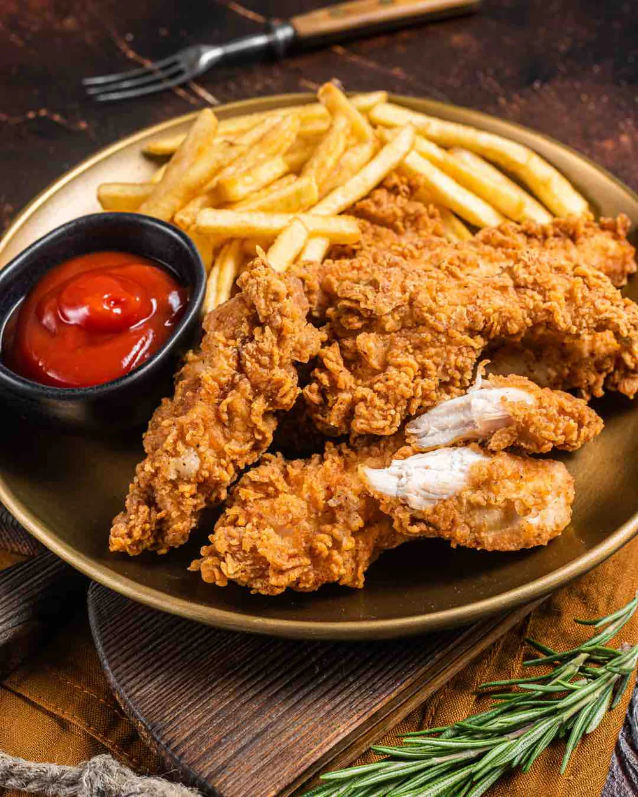

Chicken and Chips

Chicken and Chips is a combination of foods predominantly consumed in the United Kingdom, The Commonwealth, and United States. It consists of a piece of fried, roasted,
or barbecued chicken and chips, or French fries as they are known elsewhere. The consumption of chicken and chips is a popular food choice based on its value for money.
In some cities, such as London, on most high streets there are at least one or two chicken and chip shops, amongst kebab, pizza, Chinese, and Indian take-away shops. Other names for chicken and
chips include: Chicken fingers, chicken tenders, chicken nuggets and fries.
I am from Jamaica and we also call this lovely dish chicken and chips but today be are making it a bit more specific. We are using chicken tenders.
Ingredients
For the Chicken tenders
- 1lb (about 500g) chicken brest, cut into strips
- 1 cup all-purpose flour
- 1 cup breadcrumbs (or panko for extra crunch)
- ½ cup buttermilk (or regular milk)
- 1 large egg
- 1 teaspoon salt
- 1 teaspoon black pepper
- 1 teaspoon garlic powder
- 1 teaspoon paprika
- ½ teaspoon cayenne pepper (optional for spice)
- Cooking oil (for frying, such as vegetable or canola oil)
For the chips/fries
- 3-4 large potatoes (Russet or Yukon Gold work well)
- 2-3 cups vegetable or canola oil (for frying)
- 1 teaspoon salt (or to taste)
- ½ teaspoon black pepper
- ½ teaspoon garlic powder (optional)
- ½ teaspoon paprika (optional for extra flavor)
- Sause (etchup, honey mustard, barbecue sauce, ranch dressing)
Instructions
Words in boldrepresents aa a checkpoint in the making of this recipie. Enjoy!!
- Prepare the chips/Fries: Wash and peel the potatoes (or leave the skin on for a rustic style).
- Cut the potatoes into evenly sized strips, about ¼-inch thick.
- Place the cut potatoes in a bowl of cold water and soak for 30 minutes (this helps remove excess starch for crispier fries).
- Drain and pat dry thoroughly with paper towels.
- the chips/fries(First fry-Par cooking):Heat oil (about 2-3 cups) in a deep fryer or large pot to 325°F (163°C).
- Carefully add the dried potato strips in small batches (do not overcrowd).
- Fry for about 3-4 minutes, just until the fries turn soft but not golden.
- Remove from oil and place on a paper towel-lined plate. Repeat with all batches.
- Prepare the Chicken Tenders:In a bowl, mix together buttermilk, egg, salt, black pepper, garlic powder, paprika, and cayenne pepper.
- Add the chicken strips to the mixture and coat well. Let them marinate for at least 15 minutes (or longer for more flavor).
- In a separate bowl, place the flour. In another bowl, add the breadcrumbs (or panko).
- Remove each chicken strip from the buttermilk mixture, coat it in flour, then dip it back into the buttermilk mixture, and finally coat it in breadcrumbs for a crispy crust.
- Fry the Tenders:: Heat oil in a large pot or deep fryer to 350°F (175°C).
- Carefully add the breaded chicken tenders in batches (do not overcrowd).
- Fry for about 5-7 minutes, turning occasionally, until golden brown and fully cooked (internal temperature should reach 165°F / 75°C).
- Remove from oil and place on a paper towel-lined plate to drain excess oil.
- Fry the Fries (Second Fry - Crisping Up): Increase the oil temperature to 375°F (190°C).
- Fry the par-cooked fries again for about 2-3 minutes until crispy and golden brown.
- Remove from oil and drain on paper towels.
- Season immediately with salt, black pepper, garlic powder, and paprika (if using).
- Serve and Enjoy: Arrange the crispy chicken tenders and fries on a serving plate.
- Serve with your favorite dipping sauces like ketchup, honey mustard, barbecue sauce, or ranch dressing.
- Enjoy your homemade crispy chicken tenders and fries!!!
Home